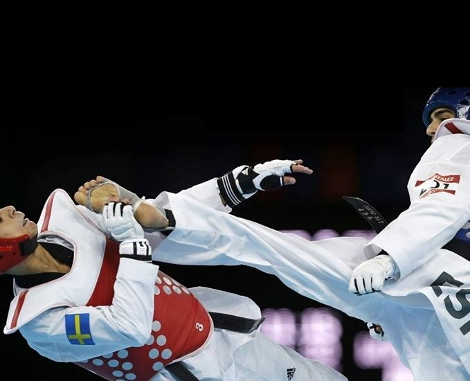
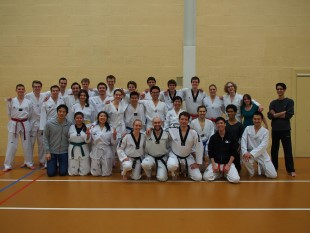
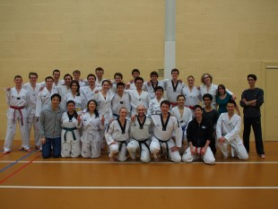

 

Exam requirements
White belt / yellow stripe (9th Gup)
Practise 1
- Basic techniques from the first style form (Il-Jang).
- Saju (four corner style form with hand/arm techniques), or taegeuk 1 (Il-Jang)
Practise 2
- Ibo Taeryon, 3 times (1-step sparring)
- Ilbo Taeryon, 3 stuks (1-staps sparring)
- Hosinsul, 2 or 3 times (self-defense)
Practise 3
- Several basic kicks: ap, dollyo and yeop chagi
- Chokki Taeryon, 1.5 minutes (non-contact sparring, only foot and leg techniques)
Theory
- Words for basic techniques and kicks.
Yellow belt (8th Gup)
Practise 1
- Basic techniques from the first style form (Il-Jang).
- Style form: Taegeuk 1 (Il-Jang)
Practise 2
- Ibo Taeryon, 5 times (1-step sparring)
- Hosinsul, 4 times (self-defense)
Practise 3
- Several basic kicks: ap, dollyo, yeop and nearyo chagi
- Chokki Taeryon, 1.5 minute (non-contact sparring, only foot and leg techniques)
Theory
- Words for techniques from practices 1, 2 and 3, and stances.
Yellow belt / green stripe (7th Gup)
Practise 1
- Basic techniques from the first and second style form (stances, punches, arm, and hand techniques).
- Style form: Taegeuk 1 (Il-Jang), and 2 (I-Jang)
Practise 2
- Ibo Taeryon, 7 times (1-step sparring)
- Hosinsul, 6 times (self-defense)
Practise 3
- Several basic kicks, a.o.: nearyo, dwit en bandae chagi
- Chokki Taeryon, 1.5 minute, (non-contact sparring, according to WTF competition system)
Theory
- Words for techniques from practices 1, 2 and 3, and stances.
Green belt (6th Gup)
Practise 1
- Basic techniques from the first, second, and thirth style form (stances, punches, arm and hand techniques).
- Style form: Taegeuk 1 (Il-Jang), 2 (I-Jang), and 3 (Sam-Jang)
Practise 2
- Ibo Taeryon, 9 times (1-step sparring)
- Hosinsul, 8 times (self-defense)
Practise 3
- Several basic kicks, a.o.: nearyo, dwit, and bandae chagi
- Ban-chayu Taeryon, 1 minute several kicking and punching techniques on a punching pillow that is held and moved.
- Chokki Taeryon, 1.5 minute, (non-contact sparring, according to WTF competition system)
Theory
- Words for techniques from practices 1, 2 and 3, and stances.
Green belt / blue stripe (5th Gup)
Practise 1
- Basic techniques from the first, second, and thirth style form (stances, punches, arm and hand techniques).
- Style form: Taegeuk 4 (Sa-Jang), Taegeuk 3 (Sam-Jang), Taegeuk 1 (Il-Jang), or Taegeuk 2 (I-Jang) (on request of examiners)
Practise 2
- Ibo Taeryon, 11 times (1-step sparring)
- Hosinsul, 10 times (self-defense)
Practise 3
- Several kicks, a.o.: momdollyo, and jumping kicks
- Ban-chayu Taeryo, 1.5 minute several kicking and punching techniques on a punching pillow that is held and moved.
- Gyeo-rugi, 1.5 minute sparring according to WTF competition-rules, with the exception that foot contact on the head and hard contact on the body aren’t allowed.
Theory
- Words for techniques from practices 1, 2 and 3, and stances.
Blue belt (4th Gup)
Practise 1
- Basic techniques from first until fifth style form (stances, punches, and arm and hand techniques).
- Style form: Taegeuk 5 (O-Jang), Taegeuk 3 (Sam-Jang) ,Taegeuk 1 (Il-Jang), or Taegeuk 2 (I-Jang) (on request of examiners)
Practise 2
- Ibo Taeryon, 13 times (1-step sparring)
- Hosinsul, 12 times (self-defense)
Practise 3
- Several kicks, a.o.: momdollyo, jumping, and turning kicks
- Ban-chayu Taeryo, 1,5 minute several kicking and punching techniques on a punching pillow that is held and moved.
- Gyeo-rugi, 1.5 minute sparring according to WTF competition-rules, with the exception that foot contact on the head and hard contact on the body aren’t allowed.
- Gyep Pa, 1 breaking test with a leg technique.
Theory
- Words for techniques from practices 1, 2 and 3, and stances.
Blue belt / red stripe (3rd Gup)
Practise 1
- Basic techniques from the first until the sixth style form (stances, punches, arm and hand techniques).
- Style form: Taegeuk 6 (Yuk-Jang) and (by own choice) Taegeuk 3 up to 5. Examiners choose from Taegeuk 1 to 5
Practise 2
- Ibo Taeryon, 14 times (1-step sparring)
- Hosinsul, 13 times (self-defense)
Practise 3
- Several kicks, a.o.: momdollyo, jumping and turning kicks, combination kicks: defense and counter.
- Ban-chayu Taeryo, 1.5 minute several kicking and punching techniques on a punching pillow that is held and moved.
- Gyeo-rugi, 1.5 minute sparring according to WTF competition-rules, with the exception that foot contact on the head and hard contact on the body aren’t allowed.
- Gyep Pa, 1 breaking test with leg technique.
Theory
- Words for techniques from practices 1, 2 and 3, and stances.
Red belt (2nd Gup)
Practise 1
- Basic techniques from first until seventh style form (stances, punches, arm and hand techniques).
- Style form: Taegeuk 7 (Chil-Jang), by own choice Taegeuk 4 up to 6. Examiners choose from Taegeuk 1 to 6
Practise 2
- Ibo Taeryon, 15 times (1-step sparring)
- Hosinsul, 13 times (self-defense)
Practise 3
- Several kicks, a.o.: momdollyo, jumping and turning kicks, combination kicks: defense and counter.
- Ban-chayu Taeryo, 1.5 minute several kicking and punching techniques on a punching pillow that is held and moved.
- Gyeo-rugi, 1.5 minute sparring according to WTF competition-rules, with the exception that foot contact on the head and hard contact on the body aren’t allowed.
- Gyep Pa, 2 breaking tests 1 with leg technique directly followed by 1 using hand technique.
Theory
- Words for techniques from practices 1, 2 and 3, and stances.
Red belt / black stripe (1st Gup)
Same requirements as black belt.
Black belt (1st Dan)
Practise 1
- Style form: Taegeuk 8 (Pal-Jang), by own choice Taegeuk 4 up to 7. Examiners choose from Taegeuk 1 to 7
Practise 2
- Ibo Taeryon, 16 times (1-step sparring): 16 times using a.o. jumping foot or hand techniques and combinations. Attack starts from left-foot front long stance and a right fist punch towards a right-foot front long stance.
Practise 3
- Hosinsul, 15 times (self-defense): 15 self-defense techniques defending against holding, clamping and grabbing performed at your own discretion, your partner being the attacker.
Practise 4
- Gyeo-rugi, 1.5 minute sparring according to WTF competition-rules (wearing full protection).
Practise 5
-
Gyep Pa, 3 breaking tests. 1 from A-category: two at your own insight (at least one foot technique) and one appointed by the exam commission. The candidate notifies the exam commission about the techniques of his or her choice. The exam commission adds the obligated technique. They can choose from:
Yeop-chagi
Dollyo-chagi
Dwit-chagi
The candidate carries out the obligated technique at first, with the back leg from a dwit-koobi or ap koobi seogi stand, followed by the two techniques of his or her own choice.
Theory
- Words for the style forms, techniques and stances (up until 8th style form) from the Gup program. (The theory exam consists of 15 multiple choice question.)